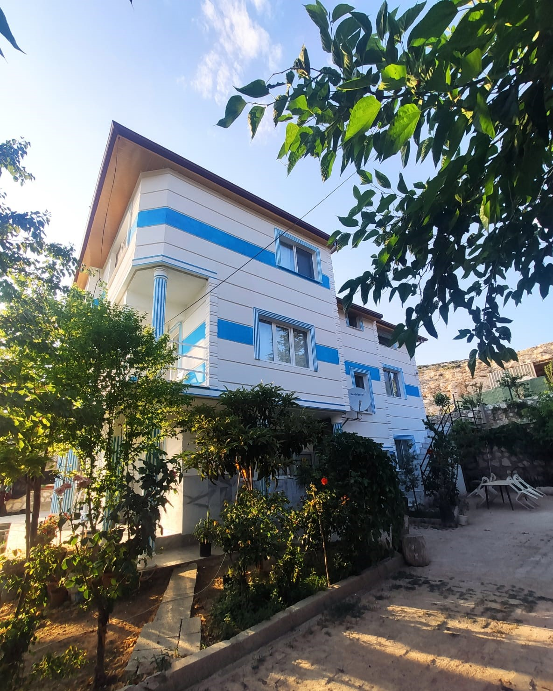

►►►Türkiye'nin Maldivlerinde Kaplan Pansiyon◄◄◄
Kaplan Pansiyon
Kaplan Pansiyon, son zamanlarda Türkiye'nin Maldivleri diye tanınan Salda Gölü çevresinde ve göle yalnızca 500metre uzaklıkta bulunan doğayla iç içe bir tatil konaklama merkezidir. Salda Gölü Türk halkı için 2017'den beri ünlenmiş olsa da aslında bu bölge 1990'lı yıllarda çok popüler bir halde ve yabancı turistler için önemli bir lokasyon konumundaydı. Biz bu bölgede 20 yılı aşkındır misafirlere ve turislere hizmet veriyor olsak ve öncesinde de konaklama hizmetlerimiz olsa da Kaplan Pansiyon olarak henüz daha yeni kurulmuş bir işletmeyiz. 2018 yılında ailecek açtığımız işletmemiz ile hizmet vermeye devam ediyoruz.

☺Salda Gölü
Salda Gölü, 1. derece sit alanı olarak geçen tamamen doğal ve tam olarak kesinliği bilinmese de meteor düşmesi ile oluştuğu varsayılan bir güzelliğimizdir. Gölün dokusunun Mars yüzeyi ile eşdeğer olduğu bulunmuş ve Nasa da dahil olarak ülkemiz çevresinde tamamen korunmaya çalışılıyordur. Gölün tabanındaki kil yapısı ve suyundaki mineral yoğunluğu ile sağlığınıza çok faydalıdır. Göl çevresi 44kilometre ve aynı zamanda birçok plaja sahip ancak ünlenmesinin sebeplerinden biri olan salda kasabası bölgesi yani Maldivler, bu yörenin söyleşi ile Saldivler, gölün içerisinde bulunan adacıklar ve beyaz kumsalı ile biraz daha Maldivleri anımsatan farklı bir dokuya sahip.